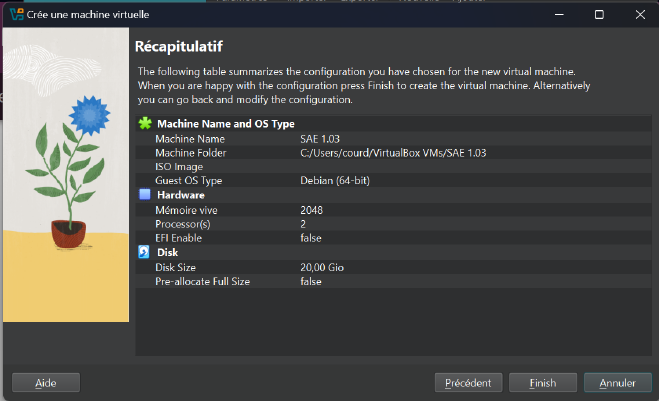

Création de la machine virtuelle sur VirtualBox
I. Choix de l'hyperviseur
VirtualBox a été recommandé, car c’est un outil libre, gratuit et multi-plateforme.
Il est facile à configurer, idéal pour des environnements d'apprentissage
et compatible avec des distributions Linux. Son utilisation permet une
prise en main rapide tout en offrant des fonctionnalités avancées.
II. Type de virtualisation
VirtualBox utilise la virtualisation complète (type 2), où l’hyperviseur
fonctionne sur un système d’exploitation hôte.
En effet, ce type de virtualisation est adéquat pour un poste de
développement, car il n'exige pas d'accès direct au matériel comme un
hyperviseur de type 1.
III. Distribution Linux
Le choix d’une distribution comme Debian est pertinent pour sa stabilité
et parce que nous avions déjà des bases vu en cours.
Cette distribution est bien supportées, avec de nombreux
packages précompilés pour des serveurs web tels qu'Apache ou Nginx
IV. Configuration de la VM
RAM : 2 à 4 Go suffisent pour un serveur web léger.
Processeurs : 1 ou 2 coeurs sont recommandés pour limiter la
consommation des ressources sur la machine hôte.
Stockage : 10 à 20 Go en disque virtuel dynamique.
Ces allocations sont suffisantes pour les tâches
demandées, tout en restant dans les limites de la plupart des machines
d’étudiants.

Création des comptes
Compte administrateur
Nous nous sommes d’abord mis en super-utilisateur dans le terminal via la
commande :
su root
Nous avons ensuite créé l’utilisateur admin_Gr106_TrinomeG1 via la commande :
sudo adduser admin_gr106_trinomeg1
Le terminal nous demandera ensuite le mot de passe du super-utilisateur root
et nous demandera plusieurs informations concernant le nouvel utilisateur
comme son mot de passe ou son nom.
Nous avons ensuite ajouté ce nouvel utilisateur dans le groupe sudo afin qu’il ait
les droits d’un super-utilisateur via la commande :
sudo usermod -aG sudo admin_gr106_trinomeg1
Avec cette commande l’utilisateur “admin_gr106_trinomeg1” “devient” ainsi
un super-utilisateur puisqu’il est désormais dans le groupe sudo qui confère
les droits aux utilisateurs de ce groupe d’administrer le système.
Nous avons à présent un compte administrateur de ma machine virtuelle autre
que le root.
Autres comptes
Nous avons ensuite créé plusieurs utilisateurs via la commande suivante en étant
bien connecté avec notre compte administrateur créé plus tôt :
sudo adduser trinomeg1_1
Encore une fois ça nous a ensuite demandé le mot de passe du nouvel utilisateur et que nous avons
renseigné :
TrinomeG1_1
Nous avons répété cette étape deux fois afin de créer 3 utilisateurs :
TrinomeG1_1
TrinomeG1_2
TrinomeG1_3
Nous avons ensuite créé un groupe via la commande suivante :
sudo groupadd TrinomeG1
Nous avons ensuite ajouté 2 des 3 utilisateurs dans le groupe via la commande
suivante :
sudo usermod -aG TrinomeG1 trinomeg1_1
sudo usermod -aG TrinomeG1 trinomeg1_2